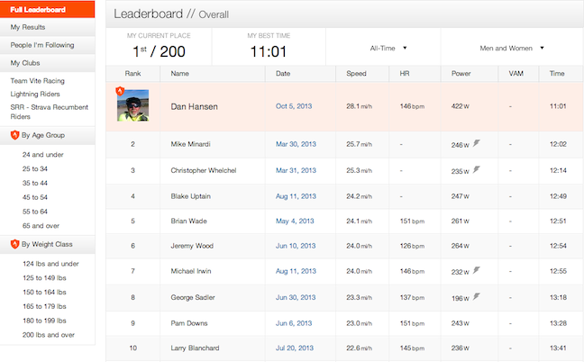
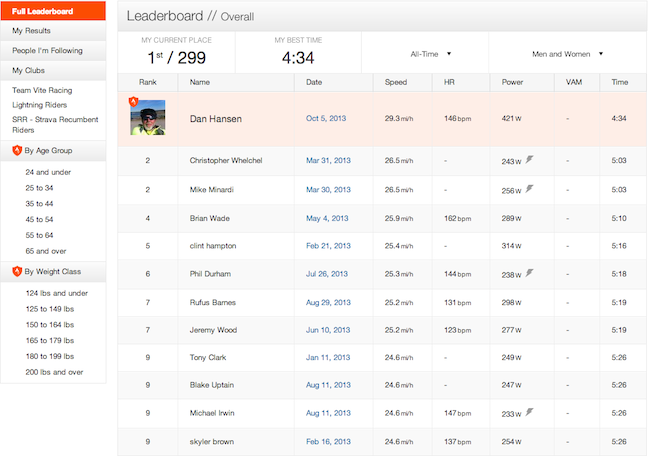

F-40 Video of Strava KOM 5.1 mile segment @ 28.1 mph
05 Oct 2013
Started out the first nine miles pretty easy averaging 18.6 mph. Once I reached Ronald Reagan Blvd I knew I was feeling strong. I had the video camera mounted on my helmet and turned it on just before rounding the corner to head north on Ronald Reagan. I had seen an upright bike cross the intersection about 1/2 mile in front of me so I started pouring it on to see if I could catch them.
I’m starting to acclimate and really understand how to ride the F-40.
Once I got the bike speed up to 27 mph I put the front chainring into the big 60 tooth gear and just kept mashing those big 175 mm cranks at 80 to 90 rpm for all I was worth. A little bit of coasting once the speed got about 35 mph to catch my breath - but it was pretty much an all out effort most of the way.
11 minutes and one second for the KOM. A full 30 seconds faster than the last time I tried it and a full minute faster than the 2nd place professional triathlete! The best I ever did on this segment with the Musashi with fresh legs and wind at my back was 21.1 mph giving me 49th place on the KOM.
Today was a very fast day!
Two days of rest combined with a small amount of time to ride (work commitments) makes for a very fast ride.
Four KOMS and two 2nd place finishes!
http://app.strava.com/activities/87060471
Here is the Strav KOM of the 5.2 miles segment that I average 28.1 mph.
 http://app.strava.com/activities/87060471#1799414316
The next KOM was a little shorter at 2.2 miles.
 http://app.strava.com/activities/87060471#1799414306
This is also my first time having a garmin one mile lap split averaging 33.1 mph.
To the garmin split lap info